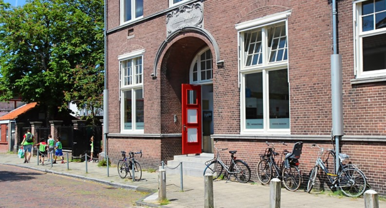

Articles
Kindergarden Koningin Wilhelminalaan
Kindergarden Koningin Wilhelminalaan in Haarlem is a nurturing and vibrant early childhood education center dedicated to providing a safe and enriching environment for young children. Located in the picturesque city of Haarlem, this Kindergarden branch offers high-quality childcare services and preschool programs designed to foster children's physical, emotional, and cognitive development. With a team of experienced and caring educators, Koningin Wilhelminalaan Kindergarden ensures that each child receives personalized attention and engages in age-appropriate activities that promote learning through play. The center's commitment to early childhood education and its welcoming atmosphere make it a trusted choice for parents seeking a supportive and stimulating environment for their children's growth and development in Haarlem.

Kindercentrum De Kleine Houtrakkers
Kindercentrum De Kleine Houtrakkers in Haarlem is a cherished establishment dedicated to nurturing the growth and development of young children. Nestled in the heart of Haarlem, this childcare center provides a safe and stimulating environment for children to learn, play, and socialize. With a team of dedicated and experienced educators, De Kleine Houtrakkers offers a range of age-appropriate activities and programs tailored to each child's developmental needs. Whether it's engaging in creative arts and crafts, exploring the outdoor play areas, or participating in educational activities, children at De Kleine Houtrakkers are encouraged to flourish and thrive. This center's commitment to providing a caring and enriching environment makes it a valuable resource for families seeking quality childcare and early education in Haarlem.
Hart
Hart, located in Haarlem, is a prominent institution dedicated to nurturing and cultivating the talents of young learners. With programs catering to both primary and secondary education, Hart provides a supportive and innovative environment for children to explore their interests and discover their true potential. This institution is committed to fostering creativity, personal growth, and academic excellence, making it an ideal choice for parents seeking a well-rounded education for their children. By offering a diverse range of programs and resources, Hart empowers students to thrive academically and express themselves creatively, ensuring they are well-prepared for a bright future. For more information about their programs and offerings, you can visit their website at Hart-Haarlem.nl
The Dreefschool
The Dreefschool, located in Haarlem, is an esteemed educational institution with a rich history and a commitment to excellence in primary education. With a legacy of providing quality learning experiences, Dreefschool is dedicated to nurturing the intellectual, social, and emotional development of its students. The school's experienced educators create a supportive and engaging environment where young minds can flourish. Through a well-rounded curriculum and a focus on individualized learning, Dreefschool strives to inspire a lifelong love for learning and equip students with the skills they need to succeed academically and personally. As an integral part of the local community, the Dreefschool plays a crucial role in shaping the future of Haarlem's youth, emphasizing values of curiosity, creativity, and respect.
Haarlem International School (HIS)
Located in the heart of the picturesque Haarlemmerhoutkwartier neighborhood in Haarlem, the Haarlem International School (HIS) is an educational gem dedicated to providing an exceptional international learning experience. At HIS, diversity is celebrated, with students hailing from all corners of the globe. This vibrant, multicultural environment enriches the educational journey, fostering open-mindedness, tolerance, and a deep appreciation for different cultures. HIS offers a rigorous curriculum that follows globally recognized educational frameworks, such as the International Baccalaureate (IB) program, ensuring that students receive a world-class education. Language instruction is a cornerstone of HIS, with English as the primary language of instruction and additional languages available for study. This multilingual approach equips students with valuable language skills and a global perspective. The school's commitment to holistic development is reflected in its extensive extracurricular activities, including sports, arts, and clubs. Students have the opportunity to explore their interests, develop talents, and form lifelong friendships beyond the classroom. HIS places a strong emphasis on community engagement and social responsibility. Students are actively involved in community service projects, instilling a sense of empathy and a desire to make a positive impact on the world.
Community Learning Centers
The Haarlemmerhoutkwartier neighborhood is home to several community learning centers that offer a wide range of educational programs and workshops for residents of all ages. These centers serve as hubs for adult education, vocational training, language courses, and community-based initiatives. They play a crucial role in enhancing the knowledge and skills of individuals within the community, fostering lifelong learning, and promoting social cohesion among Haarlemmerhoutkwartier residents.